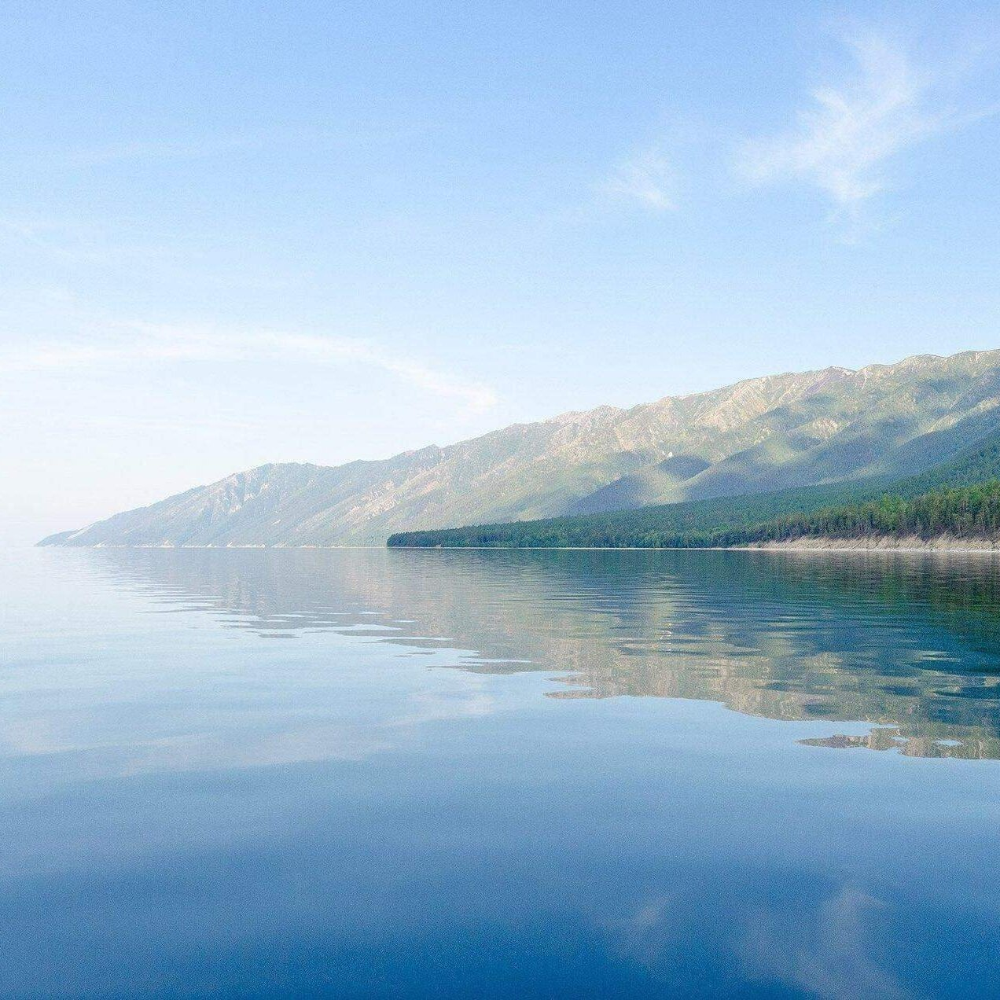

Вода, которую мы Вам доставляем, прошла долгий путь от подземных источников до наземных ручьёв. И вот она у вас!
Источник вашей воды - Байкал - сердце русских озер. Это самое глубокое озеро на земном шаре. Глубина его достигает
1637 метров. Предельная глубина Танганьики — 1435 метров, Иссык-Куля — 702. На Земле всего восемь озер имеют
глубину более 500 метров. Это и определяет огромную величину запасов воды в Байкале. Его объём — 23,6 тысяч
кубических километров, что составляет около 20% пресных озерных вод планеты — во всех пресных озерах мира
содержится 123 тысячи кубических километров воды. Для того, чтобы представить себе всю огромность водного тела
озера, напомним, что реке Ангаре, ежегодно выносящей 60,9 кубических километров воды, нужно 387 лет беспрерывной
работы, чтобы осушить его чашу, при условии, конечно, что за это время в него не попадёт ни капли воды.
Вода «Рычал-Су» берет свое начало от талых вод ледника горы Шалбуздаг, которые проникают в глубинные слои земли,
проходят через множество минеральных пластов, обогащается макроэлементами, и под действием естественно-природных
процессов выходит на поверхность самотеком. Мы разливаем только то, что дает природа, не забирая лишнего и не
нарушая природный баланс, это позволяет сохранять постоянный минеральный состав и стабильное качество нашей продукции.
Поэтому, мы можем смело говорить, что вода «Рычал-Су» создана самой природой!